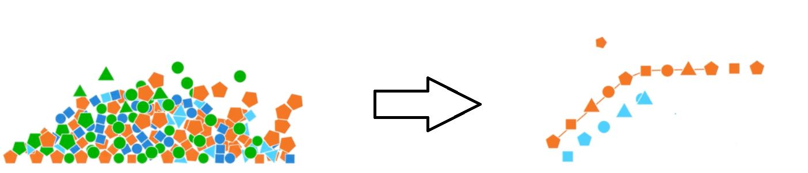

My most recent project for the DSC-680 Applied Data Science course. Here, we explore my personal weight loss data in an attempt to understand
how weight gain and loss work while potentially trying to build a predictive model for future weight gain or loss using this data.
My Final Project for DSC-520 Introduction to Statistics Course. We explore Traffic citations and stop data in the State of Florida.

My Final Project for DSC-530 Exploratory Data Analysis. We explore Hurricane and Weather
data to find a possible correlation between the two.
My Final Project for DSC-500 Introduction to Data Science Course. A Research Paper and Informational poster regarding Data Science in Video Games

My DSC-540 Data Preparation Mid Term Project. Fuzzy matching was one of the goals of this project. See the repository for full details.
Final Project for DSC-540 Data Preparation. Using Python to access the Marvel Comics API to retrieve data and perform operations with said data such as joins using Pandas dataframes.

DSC-550 Data Mining Final Project. My attempt at analyzing Youtube Video Trending data and building several predictive models using Python

DSC-630 Predictive Analytics Final Project. We use the Service Request data provided by the City of Oakland in an attempt to generate predictions for future requests.
Second project for DSC-680 Applied Data Science. My attempt at building a recommendation engine using Airbnb listings and review data.